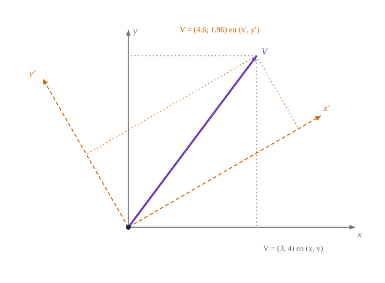

2Los objetos físicos no dependen de las coordenadas
Vector frente a componentes, invariantes y un repaso mínimo de álgebra y cálculo

Figura 2.1: El mismo vector \(\mathbf{V}\) (violeta) descrito con dos sistemas de ejes cartesianos, uno girado \(30^\circ\) respecto del otro: las componentes cambian, el vector y su longitud no.
Si dos observadores miden el mismo vector con ejes distintos y obtienen números distintos, qué es lo que realmente tiene el vector
Objetivos y prerrequisitos
Objetivos. Al terminar el tema sabrás:
distinguir un vector (objeto físico) de sus componentes (números que dependen de la base);
calcular las componentes de un vector tras un giro de ejes y comprobar qué se conserva;
reconocer los invariantes (longitud, producto escalar, trabajo) y usarlos para detectar errores;
explicar qué exige una ley física para valer en cualquier sistema de coordenadas;
repasar las herramientas mínimas que usa el libro: producto escalar, determinante, inversa de una matriz \(2\times2\) y regla de la cadena.
Cuando decimos «la fuerza vale \((3,4)\) N», esos dos números son las componentes de la fuerza respecto a unos ejes elegidos. Si otro observador gira sus ejes \(\alpha=30^\circ\), la misma fuerza tendrá otras componentes. Lo que no cambia es la flecha: su módulo, su dirección y su sentido en el espacio.
Ejemplo 2.1 (Ejemplo resuelto: giro de ejes) Sea \(\mathbf{V}=(3,4)\) en los ejes \((x,y)\) y sean \((x',y')\) otros ejes cartesianos girados \(\alpha=30^\circ\) en sentido antihorario. Los vectores unitarios de los nuevos ejes, en las coordenadas antiguas, son \(\mathbf{e}'_1=(\cos\alpha,\sin\alpha)\) y \(\mathbf{e}'_2=(-\sin\alpha,\cos\alpha)\). Las nuevas componentes son las proyecciones: \[
V'_x=\mathbf{V}\cdot\mathbf{e}'_1=3\cos30^\circ+4\sin30^\circ\approx4{,}598,\qquad
V'_y=\mathbf{V}\cdot\mathbf{e}'_2=-3\sin30^\circ+4\cos30^\circ\approx1{,}964 .
\]Qué cambia y qué no. Las componentes cambiaron, pero la longitud es la misma: \[
\sqrt{V'^2_x+V'^2_y}=\sqrt{4{,}598^2+1{,}964^2}=\sqrt{25}=5=\sqrt{3^2+4^2}.
\] Y el vector se reconstruye desde cualquiera de las dos listas: \(V'_x\mathbf{e}'_1+V'_y\mathbf{e}'_2=(3,4)\).
La Figura 2.1 lo muestra: las proyecciones grises dan \((3,4)\) y las naranjas \((4{,}598;\,1{,}964)\) sobre la misma flecha violeta.
TipIdea clave
Un vector es un objeto geométrico; sus componentes son su descripción en una base. Mientras los ejes sean cartesianos y ortonormales, las componentes se transforman con una matriz de giro. En el resto del libro los ejes no serán ortonormales ni constantes, y la regla será la ley de transformación del tema siguiente.
AdvertenciaErrores frecuentes
Igualar vectores comparando sus componentes en bases distintas: \((3,4)\neq(4{,}598;\,1{,}964)\) como listas, pero son el mismo vector.
Creer que «el vector cambió» al girar los ejes: lo que cambió fue el observador.
NotaUn poco de historia: las coordenadas de Descartes
Describir un punto del plano con dos números medidos desde unos ejes fijos es la idea de la geometría analítica, que René Descartes publicó en 1637 en La Géométrie, un apéndice del Discurso del método, y que Fermat desarrolló por su lado. De ahí el nombre «cartesianas». Con ellas una curva se convierte en una ecuación \(f(x,y)=0\). Descartes llegó a considerar también sistemas de ejes oblicuos, que es justo lo que volveremos a necesitar en este libro. La edición latina de Frans van Schooten (1649) difundió la obra.
¿Cuánto mide el vector \(\mathbf{V}=(3,4)\) y cuánto medirá en cualquier otro sistema cartesiano?
\(\|\mathbf{V}\|=\sqrt{3^2+4^2}=5\), y es el mismo en todos los sistemas cartesianos (la longitud es invariante).
Al girar los ejes, el vector cambia porque sus componentes cambian.
Falso. Cambian las componentes (la descripción), no el vector. Su módulo y su dirección en el espacio son los mismos.
2.2 Lo que no cambia: invariantes físicos
Algunas cantidades sí son iguales para todos los observadores. Son las que tienen significado físico propio:
Cantidad
Fórmula en componentes
Por qué es invariante
Longitud de un vector
\(\sqrt{V_xV_x+V_yV_y}\)
es la longitud de la flecha
Producto escalar
\(\mathbf{V}\cdot\mathbf{W}=V_xW_x+V_yW_y\)
\(\|\mathbf{V}\|\|\mathbf{W}\|\cos\varphi\)
Trabajo
\(W=\mathbf{F}\cdot\mathbf{d}\)
es una energía
Energía cinética
\(\tfrac12m\,\mathbf{v}\cdot\mathbf{v}\)
es una energía
Un chequeo muy útil: toda fórmula física tiene que dar el mismo resultado en cualquier sistema. Si un resultado cambia al girar los ejes, o la fórmula está mal, o lo que se calculó no era un invariante.
calculado La matriz de giro \(R\) es ortogonal (\(R^{\mathsf T}R=I\)): por eso conserva longitudes y productos escalares. En el tema siguiente veremos qué cambia cuando los ejes dejan de ser ortonormales.
2.3 Las leyes de la física y las coordenadas
Una ecuación como \(\mathbf{F}=m\,\mathbf{a}\)no menciona ejes: dice que dos vectores son iguales. Al escribirla en componentes, \(F_x=ma_x\), \(F_y=ma_y\), la forma se conserva si se giran los ejes, porque los dos miembros se transforman igual. En cambio, la «ecuación» \(F_x=m\,a_y\) no es una ley física: es cierta en unos ejes y falsa en otros.
AdvertenciaDos puntos que suelen confundir
Una ecuación entre componentes solo vale si en ella aparecen los mismos índices a los dos lados. En cartesianas basta con eso; en curvilíneas habrá que cuidar además si el índice va arriba o abajo (tema siguiente).
Igual que \(F_x=ma_x\) no es lo mismo que \(F=ma\): la primera es una igualdad entre números, la segunda entre vectores.
Pon a prueba lo anterior.
¿Cuál de estas igualdades puede ser una ley física válida en cualquier sistema cartesiano?
\(F_x=m\,a_x\) junto con \(F_y=m\,a_y\)
\(F_x=m\,a_y\)
\(F_x=5\) N
\(\|\mathbf{F}\|=F_x\)
La primera: iguala cada componente con la correspondiente, y las dos listas se transforman igual. Las demás dependen de la elección de ejes (o solo valen en ejes concretos).
2.4 Repaso exprés
Cinco herramientas que usa todo el libro. Si te son familiares, salta a las preguntas finales.
NotaProducto escalar
\(\mathbf{u}\cdot\mathbf{v}=\sum_iu_iv_i=\|\mathbf{u}\|\|\mathbf{v}\|\cos\varphi\). Vale cero si y solo si los vectores son perpendiculares. La longitud al cuadrado es \(\mathbf{u}\cdot\mathbf{u}\).
NotaDeterminante y área
En el plano, \(\det\begin{pmatrix}a&b\\c&d\end{pmatrix}=ad-bc\) es el área orientada del paralelogramo de lados \((a,c)\) y \((b,d)\). Si es cero, los vectores son paralelos.
NotaInversa de una matriz \(2\times2\)
\(\begin{pmatrix}a&b\\c&d\end{pmatrix}^{-1}=\dfrac1{ad-bc}\begin{pmatrix}d&-b\\-c&a\end{pmatrix}\). Se usará para pasar de \(g_{ij}\) a \(g^{ij}\).
NotaRegla de la cadena
Si \(\mathbf{r}\) depende de \(\theta^j\) y cada \(\theta^j\) de \(\theta'^i\), entonces \(\dfrac{\partial\mathbf{r}}{\partial\theta'^i}=\dfrac{\partial\theta^j}{\partial\theta'^i}\dfrac{\partial\mathbf{r}}{\partial\theta^j}\) (suma sobre \(j\)). Es la base de las leyes de transformación.
NotaConvenio de suma (Einstein)
Un índice repetido en un mismo término, una vez arriba y otra abajo, indica suma: \(V^ig_i=\sum_iV^ig_i\). El índice de arriba no es un exponente.
Sé por qué \(F_x=ma_y\) no puede ser una ley física.
Manejo con soltura producto escalar, determinante \(2\times2\), inversa \(2\times2\) y regla de la cadena.
NotaFuentes, correcciones y qué queda pendiente
Fuentes. Texto autónomo, resultados estándar de álgebra lineal y mecánica (Spiegel 1959; Heinbockel 1996). El ejemplo del giro se ha calculado y comprobado con Julia (scripts/verificar_ejercicios.jl y la figura de portada, que verifica la invariancia de la norma antes de dibujar).
Qué queda pendiente. Revisión visual de la figura; nota histórica con fuentes secundarias; referencias no leídas línea a línea.
Heinbockel, J. H. 1996. Introduction to Tensor Calculus and Continuum Mechanics. Department of Mathematics; Statistics, Old Dominion University.
Spiegel, M. R. 1959. Vector Analysis and an Introduction to Tensor Analysis. Schaum’s Outlines.
Referencias
Son las mismas que aparecen en el margen, junto al texto.
Heinbockel, J. H. 1996. Introduction to Tensor Calculus and Continuum Mechanics. Department of Mathematics; Statistics, Old Dominion University.
Spiegel, M. R. 1959. Vector Analysis and an Introduction to Tensor Analysis. Schaum’s Outlines.